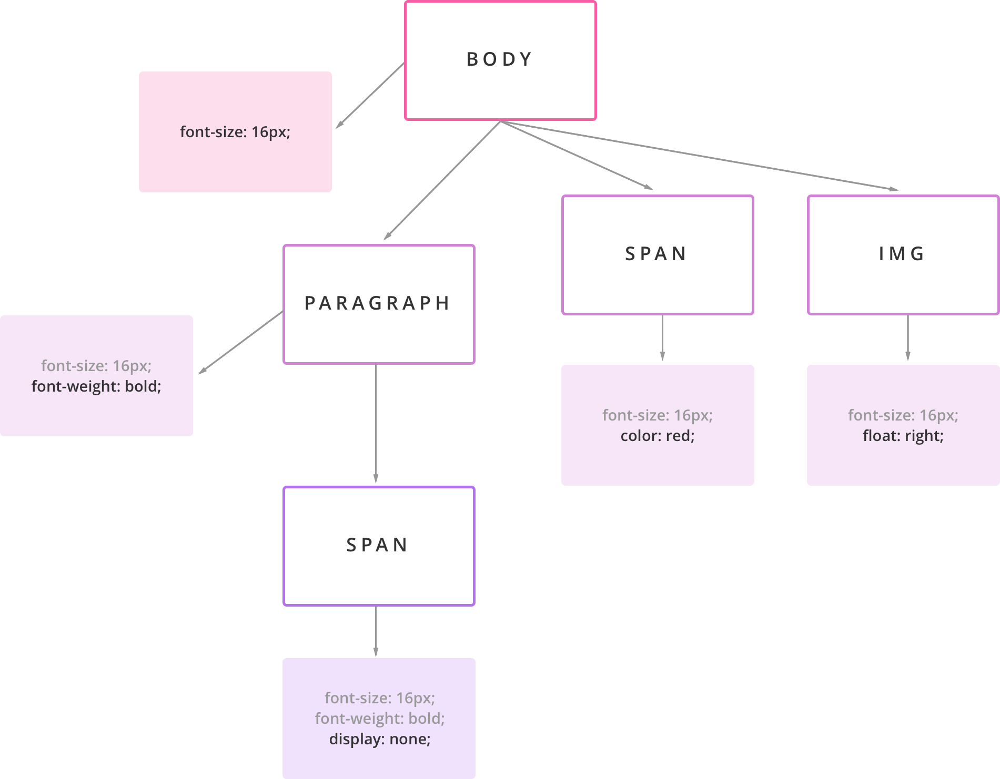
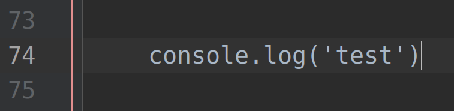
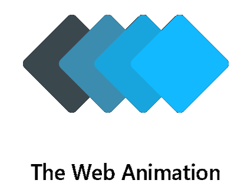

JS Heroes Workshop
Dzień 1 - Javascript wprowadzenie
by Kemal Erdem | @burnpiro
Dlaczego JS?
Łatwość nauki
Kompatybilność wsteczna
Dowolność paradygmatów
Web to nie tylko JS!
DOM - Document Object Model

CSSOM - CSS Object Model
Web APIs - cała reszta technologii


Thanks
Questions?
Kemal Erdem | @burnpiro
https://erdem.pl
https://github.com/burnpiro